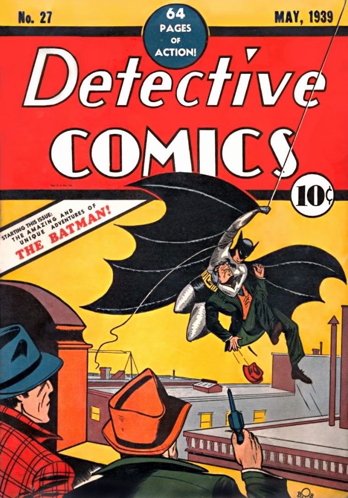

Batman se aventura no submundo de Gotham City quando um assassino sádico deixa para trás um rastro de pistas enigmáticas. À medida que as evidências começam a chegar mais perto de casa e a escala dos planos do criminoso se torna clara, ele deve forjar novos relacionamentos, desmascarar o culpado e trazer justiça ao abuso de poder e à corrupção que há muito atormentam a metrópole.
Depois de diferentes reclamações sobre a versão do Batman de Ben Affleck, o Homem-Morcego do diretor Matt Reeves - vivido por Robert Pattinson - foi aguardado com grande antecipação pelos fãs e não decepcionou. O filme conquistou incríveis 90% de aprovação dos críticos no site Rotten Tomatoes. A trama se passa no segundo ano do jovem Bruce como Batman e mostra melhor o lado detetive do morcego de Gotham.
elenco:

Robert Pattinson
Zoë Kravitz

Paul Dano
Colin Farrell

Jeffrey Wright
Andy Serkis
John Turturro
Em nome de seus pais assassinados, Bruce Wayne trava uma guerra eterna contra os criminosos de Gotham City. Ele é vingança. Ele é a noite. Ele é o Batman. Um dos personagens fictícios mais emblemáticos do mundo, Batman dedicou sua vida a uma cruzada sem fim, uma guerra contra todos os criminosos em nome de seus pais assassinados, que foram tirados dele quando ele era apenas uma criança. Desde aquela noite trágica, ele treinou seu corpo e mente até a perfeição física para ser um super-herói feito por si mesmo. Ele desenvolveu um arsenal de tecnologia que envergonharia a maioria dos exércitos. E ele montou equipes de seus companheiros Super Heróis da DC, como a Liga da Justiça, os Renegados e Batman, Incorporated. Um playboy bilionário durante o dia, a vida dupla de Bruce Wayne oferece a ele o conforto de uma vida sem preocupações financeiras, um mordomo leal que se tornou guardião e a base perfeita de operações na antiga rede de cavernas sob a extensa propriedade de sua família. À noite, no entanto, ele abandona toda a pretensão, veste sua icônica capa recortada e capuz pontudo e toma as ruas sombrias, céus e telhados de Gotham City.
O herói apareceu pela primeira vez na Detective Comics #27 e, apesar do quadrinho contar com o mês de maio impresso em sua capa, o lançamento aconteceu no terceiro mês de 1939


{kind=link}
{kind=link}
{kind=link}
{kind=link}
{kind=link}
{kind=link}
{kind=link}
{kind=link}
{kind=link}
{kind=link}